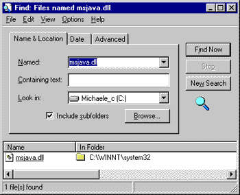

|
| ||
|
| ||
Michael Edwards
Developer Technology Engineer
Microsoft Corporation
Updated: June 25, 1999
Editor's note: This article is but the latest in a series of articles Michael has written on sniffing for various system components. Other parts include:
"Sniffing for Browsers, Virtual Machines, and Operating Systems" and, appropriately enough,
"More Sniffing for Browsers, Virtual Machines, and Operating Systems"
Contents
Introduction
Virtual Machine Sniffing Is Harder than I Thought
BuildIncrement Property Differentiates Versions
Use the <OBJECT> Tag to Update the Microsoft VM for Internet Explorer
Use a Java Applet to Sniff the Client's Virtual Machine Version
Let the User Do the Detection
For More Information
Summary
I get lots of requests from readers for ways to sniff the virtual machine used by browsers hitting Java-enabled Web pages. In previous articles, my stock answer has been to use Java itself. Because a Java-only solution seemed so simple, it puzzled me why so many of you kept after me for a script-only option. So, in order to satisfy our collective curiosity, I set out to create some working sample code for sniffing the virtual machine from a Web page. I came up with three techniques I'll cover in this article. I also figured out what was bothering many of you about this problem, and I'll talk about that first.
No methods for determining the browser's virtual machine are supported in the W3C Document Object Model. Further, there isn't any support in the Dynamic HTML object model for Internet Explorer or the non-standard DOM extensions for the Netscape browsers. In a nutshell, that means there's no cross-browser, script-only method to sniff the user's virtual machine from a Web page.
However, this is not as much of a limitation as you might think. In practice, most Java-enabled Web pages that claim to support multiple browser and virtual machine configurations only test their Web sites under a limited number of common configurations, simply because most Web pages using Java components require a certain browser and virtual machine. Those pages only have to employ browser and virtual machine sniffing techniques that work in the configurations they expect to encounter.
So the sad truth is that many of you will need to use sniffing techniques specific to your situation. Because I am most familiar with Microsoft® technologies, I spent my time researching the techniques that work for Internet Explorer and the Microsoft virtual machine (Microsoft VM).
With the Microsoft VM, the important version information is indicated by the "build increment", a number that, once upon a time in a far-away land, started at 0 and continues to increment by one for each new build (which occurs practically daily). The build increment for the Microsoft VM that originally shipped with Microsoft Visual J++® 6.0 was 2922 (as in 5.0.2922), and was updated to 2925 with Visual Studio® 6.0 Service Pack 1.
Of course, Microsoft tests for backward compatibility whenever we release a new virtual machine, so you can always use versions later than the minimum necessary to run your applications. However, just because you can load the latest version of the Microsoft VM doesn't mean you should, especially if you subscribe to the notion that minimizing download time is a good thing. As a result, it pays to know and sniff for only the minimum version required for the features that you use.
If the user is running Internet Explorer, embedding the <OBJECT> tag in a page is the easiest and safest method to detect or install the Microsoft VM that will support your page. The code snippet below shows how:
<OBJECT CLASSID="clsid:08B0E5C0-4FCB-11CF-AAA5-00401C608500" WIDTH=0 HEIGHT=0 CODEBASE="http://www.microsoft.com/isapi/redir.dll?prd=JAVAVM&pver=5.00.2910&ar=MSVISUALJ#Version=5,0,2925"> </OBJECT>
The key to using this method is to correctly specify the version number that appears after the hash symbol in the URL for the CODEBASE attribute: "Version=5,0,2925". Internet Explorer uses the version number to see whether the component associated with the CLASSID value (MSJAVA.dll in this case) is up to date. If it is, nothing further happens; if it isn't, the component specified by the CODEBASE attribute is automatically downloaded and installed. The URL for the CODEBASE attribute is actually a hook into the redirection database on www.microsoft.com that resolves to the URL for the latest Microsoft VM. When this redirection was originally established, it was anticipated that the Microsoft VM version 2910 would be shipped for use with Windows Foundation Classes (hence the "pver=5.00.2910" attribute above that you should leave intact). Therefore, the key to using the "Version=X,Y,ZZZZ" value correctly is to recognize that it will always install the latest Microsoft VM if the virtual machine installed on the user's computer is older than "X,Y,ZZZZ".
Notice that the CODEBASE attribute installs the Microsoft VM from a Microsoft server. You could just as easily redistribute the self-extracting setup application for the Microsoft VM, MSJavX86.exe, from your own server (the #Version value refers to the correct build increment for the Microsoft VM you redistribute):
<OBJECT CLASSID="clsid:08B0E5C0-4FCB-11CF-AAA5-00401C608500" WIDTH=0 HEIGHT=0 CODEBASE="http://yourServer/MSJavX86.exe#Version=5,0,2925"> </OBJECT>
This technique is also useful to update the user's virtual machine to a specific version of the Microsoft VM, rather than whatever latest version is installed using the redirection URL shown above. See below for more information on redistributing the Microsoft VM self-extracting executable setup application.
The only part you might not like about the <OBJECT> tag solution is the fact that it is automatic. While that makes it super simple to both detect and update the Microsoft VM, some users might get upset if your page starts a 6MB download (approximately the size of the latest Microsoft VM download) without their consent. After the download completes, users must approve the software publisher certificate before the Microsoft VM is actually installed on the system. Some users prefer to initiate the download themselves, though. If this is important, you'll first have to determine whether they have a current enough Microsoft VM.
Here is is some Visual J++ source code you can use to determine the build increment:
import java.applet.*;
public class detectVM extends Applet
{
public String BuildIncrement()
{
String BuildIncrement;
try
{
// throw ClassNotFoundException for SystemVersionManager
Class sysVerMgr = Class.forName("com.ms.util.SystemVersionManager");
// found SystemVersionManager, get VM build increment number
BuildIncrement = com.ms.util.SystemVersionManager.getVMVersion().getProperty("BuildIncrement");
}
catch (Throwable e)
{
// it's either not an MS VM, or is pre-2.0
BuildIncrement = "0";
}
return BuildIncrement;
}
}
What follows is some Internet Explorer-only script that checks BuildIncrement and notifies the user whether they need to upgrade their virtual machine. (Refer to my sniffing article, "Sniffing for Browsers, Virtual Machines, and Operating Systems" for information on sniffing for browser type.)
<HTML>
<HEAD>
<SCRIPT language=VBScript>
Function getBuildIncrement()
getBuildIncrement = "0"
On Error Resume Next
getBuildIncrement = detectVM.BuildIncrement
End Function
</SCRIPT>
<SCRIPT language=JavaScript>
var badVM =
"<HTML><BODY><P>This application requires the Microsoft® Virtual \
Machine Version 5.00.2925 or greater, and the Microsoft \
Windows® Foundation Classes (WFC) for Java. \
<A href=http://www.microsoft.com/isapi/redir.dll?prd=javavm&pver=5.00.2910&ar=msvisualj>
Update</A> required components.</BODY></HTML>";
function sniff()
{
// note you should first sniff for IE before sniffing for
// the Microsoft VM build
var buildIncrement = getBuildIncrement();
parseInt(buildIncrement, 10);
if (buildIncrement < 2925)
{
// tell the user they need to download a newer virtual machine
document.write(badVM);
}
}
</SCRIPT>
</HEAD>
<BODY onload="sniff()">
<APPLET code=detectVM.class height=0 width=0 id=detectVM name=detectVM>
</APPLET>
</BODY>
</HTML>
If all of the above methods are more complicated than you'd like, consider letting the user determine which version, if any, of the Microsoft VM is installed on their machine (and thus whether they should update it). The easiest way for the user to determine this information is by entering "msjava.dll" in the Find Files dialog box (from the Start menu):

Figure 1: Using the Find Files dialog box to locate MSJAVA.dll
The user can right-click on the msjava.dll file (the component that implements the Microsoft VM) in this dialog and select Properties to bring up a Property sheet where the Version tab indicates the virtual machine version. You can provide information on your Web page regarding the minimum version required for your page, as well as information on how to upgrade the Microsoft VM if necessary.
Another easy way for users to determine the version of their Microsoft VM is through the copyright information displayed when executing JView.exe from a command-line prompt:
C:\WINNT\PROFILES\MICHAELE\DESKTOP>jview Microsoft (R) Command-line Loader for Java Version 5.00.2922 Copyright (C) Microsoft Corp 1996-1998. All rights reserved.
Redistributing the Microsoft VM self-extracting setup application from your own Web server allows you to specify which virtual machine is provided to your customers. Redistributing your own copy of the self-extracting setup application can also be useful if you provide Web pages in an offline format (such as CD-ROM Web snapshots). Here are three links to help get you started:
If you would like to learn more about the SystemVersionManager class used by the Java applet to sniff the BuildIncrement property, there's the Microsoft SDK for Java 3.1 documentation on com.ms.util.SystemVersionManager  .
.
If you'd like to learn more about the released versions of the Microsoft VM for Java:
In this article I talked about two methods you can use to update the Microsoft VM used by Internet Explorer for pages with <APPLET> tags. The first uses an <OBJECT> tag to automatically install the latest Microsoft VM, and includes a variation you can apply if you would like to install a specific virtual machine instead. The second method lets you detect the virtual machine and recommend downloading a newer version of the Microsoft VM to users that need to (rather than having one download automatically). I also showed you how to provide information so the user can do the virtual machine detection.
Although I demonstrated solutions narrowly focused on WFC-based components for the Internet Explorer browser, the same processes can be applied to any Java solution. That is, first determine the platforms your application requires, then use virtual machine version checking (and updating) techniques you know will work on those platforms.
Did you find this material useful? Gripes? Compliments? Suggestions for other articles? Write us!
© 1999 Microsoft Corporation. All rights reserved. Terms of use.